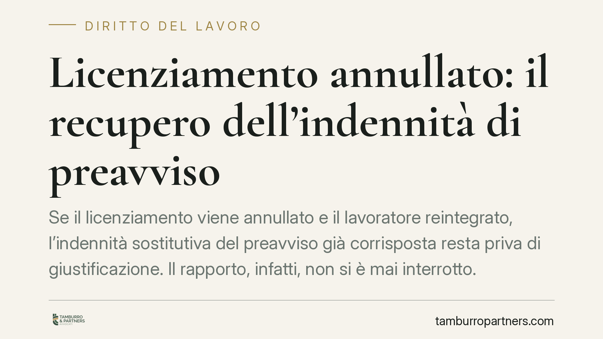

Licenziamento annullato: il recupero dell'indennità di preavviso
Se il licenziamento viene annullato e il lavoratore reintegrato, l'indennità sostitutiva del preavviso già corrisposta resta priva di giustificazione. Il rapporto, infatti, non si è mai interrotto. Ne deriva un tema delicato: quel pagamento può essere recuperato dal datore, e a quali condizioni. Analizziamo i principi civilistici che regolano la questione e le ricadute operative per aziende e lavoratori.

Il caso: cosa accade quando il licenziamento viene annullato
Il licenziamento intimato con effetto immediato comporta, di regola, il pagamento dell'indennità sostitutiva del preavviso (art. 2118, secondo comma, del Codice civile). Si tratta della somma che il datore versa al posto del periodo di preavviso non concesso.
Quando però il giudice annulla il licenziamento e dispone la reintegrazione, la situazione muta radicalmente. La reintegra ha effetto ripristinatorio: il rapporto di lavoro si considera come mai interrotto. Viene quindi meno il presupposto stesso dell'indennità di preavviso, che serve a compensare la cessazione anticipata del rapporto. Se il rapporto prosegue, quella cessazione non c'è stata.
Licenziamento annullato e indennità di preavviso: il principio civilistico
Il fondamento del recupero non va cercato in una singola pronuncia, ma nel meccanismo dell'indebito oggettivo disciplinato dall'art. 2033 del Codice civile. La norma stabilisce che chi ha eseguito un pagamento non dovuto ha diritto alla restituzione di quanto versato.
L'indennità di preavviso corrisposta in occasione di un licenziamento poi annullato diventa, a effetti retroattivi, un pagamento privo di causa: la ragione giuridica che lo sorreggeva – l'interruzione del rapporto – è venuta meno con l'ordine di reintegra. Da qui il diritto del datore a ottenerne la restituzione.
È una lettura coerente con l'effetto ripristinatorio della tutela reintegratoria: non si tratta di un rimborso a titolo di penalità, ma della restituzione di una somma che, retroattivamente, non era dovuta.
Reintegra e tutela indennitaria: due regimi diversi
La questione riguarda i casi di reintegrazione, non quelli di sola tutela indennitaria. Occorre quindi distinguere.
La tutela reintegratoria – prevista dall'art. 18 dello Statuto dei Lavoratori (Legge n. 300/1970) nella versione modificata dalla Legge Fornero, e dal D.Lgs. n. 23/2015 per le assunzioni successive – comporta il ripristino del rapporto. È in questo scenario che matura il tema della restituzione del preavviso.
La tutela indennitaria, invece, non ripristina il rapporto: lo dichiara risolto e riconosce al lavoratore un indennizzo economico. In questo caso il rapporto resta cessato e il problema della restituzione del preavviso non si pone allo stesso modo.
Lo spartiacque temporale è il 7 marzo 2015: per i lavoratori assunti a tempo indeterminato da tale data si applica il regime del D.Lgs. n. 23/2015 (contratto a tutele crescenti); per gli assunti in precedenza continua a operare l'art. 18 dello Statuto nella formulazione vigente.
Implicazioni pratiche per aziende e lavoratori
Per il datore di lavoro, la reintegra non è solo un onere di riammissione in servizio e di pagamento delle retribuzioni maturate: apre anche la possibilità di far valere la restituzione di somme corrisposte in ragione di una cessazione poi caduta. L'indennità di preavviso rientra tra queste.
Per il lavoratore, la reintegrazione – pur favorevole – può comportare partite di conguaglio. Le somme percepite a titolo di preavviso possono essere oggetto di compensazione o richiesta di restituzione, incidendo sul saldo economico complessivo della vicenda.
In entrambi i casi, la corretta gestione contabile e la tempestività delle iniziative sono decisive: l'azione di ripetizione dell'indebito è soggetta a termini di prescrizione e va inquadrata correttamente fin dall'esecuzione della sentenza.
Cosa fare in concreto
- Verificate il tipo di tutela riconosciuta dalla sentenza: reintegratoria o solo indennitaria. Da questo dipende l'intera impostazione dei conguagli.
- Ricostruite le voci erogate al momento del licenziamento, isolando l'indennità sostitutiva del preavviso e le altre somme legate alla cessazione.
- Predisponete un conteggio analitico che metta a raffronto quanto dovuto per la reintegra e quanto già versato, individuando le partite da compensare o restituire.
- Formalizzate le richieste per iscritto, con espressa qualificazione a titolo di indebito ex art. 2033 c.c., per evitare contestazioni sul fondamento della pretesa.
- Monitorate i termini di prescrizione dell'azione di ripetizione, coordinandoli con l'esecuzione della pronuncia di reintegra.
Una nota di metodo: la materia è oggetto di orientamenti in evoluzione. In assenza di estremi certi e verificabili di una specifica pronuncia, questo contributo espone i principi civilistici di riferimento e non un caso individuale. Per l'applicazione a una situazione concreta è sempre opportuno un esame puntuale della sentenza e della documentazione.
Contributo informativo a cura di Tamburro & Partners Avvocati – Avv. Giuseppe Tamburro. Non costituisce parere legale.
Ogni storia di lavoro ha i suoi tempi.
Se gestisci HR e vuoi un confronto su contenzioso, ispezioni o licenziamenti, scrivi allo studio. Ti rispondiamo entro un giorno lavorativo.